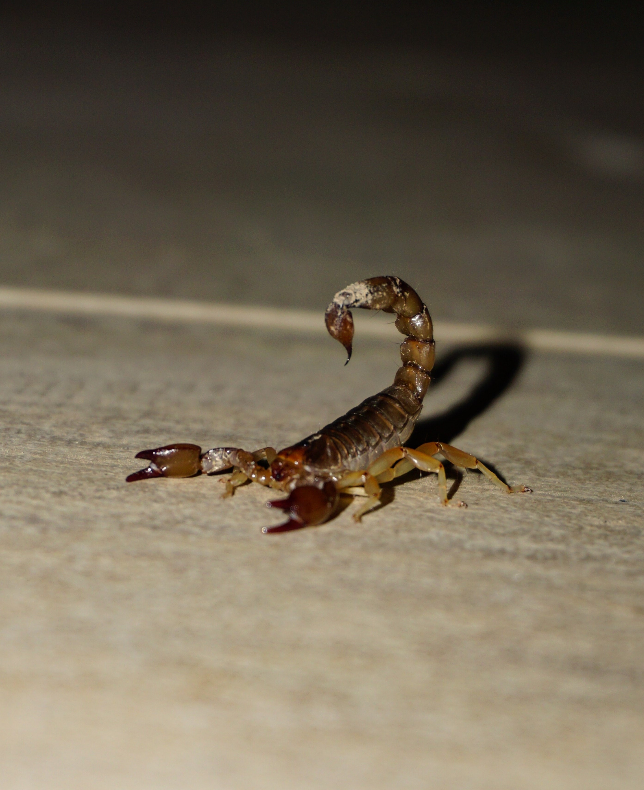

Sintomas da Escorpião-Marom (Tityus bahiensis)
Seus sintomas podem levar a óbito
Humano
- Dor intensa
- Sensação de ardência ou agulhadas
- Inflamação no local da picadas
- Náusea
- Vômito
- Aumento da frequência cardíaca
- Sudorese
- Enjoos
- Dificuldade para respirar
- Queda de pressão
Cão
- Dor
- Coceira no local da ferida
- Inchado
- Avermelhada ou enegrecida
Gato
- Náusea
- Salivação excessiva
- Vermelhidão ou sangramento no local da picada
- Inchaço